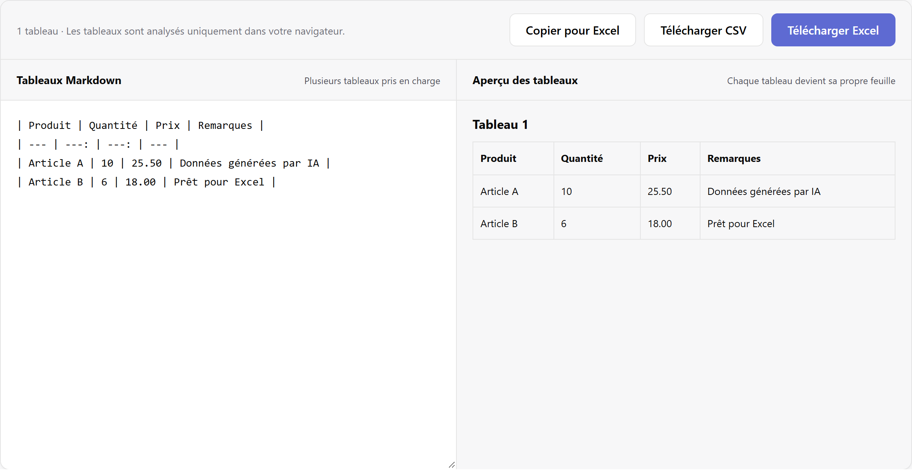

Collez un tableau Markdown
Fonctionne avec les tableaux copiés depuis des réponses IA, des fichiers MD ou votre éditeur.
Outil de tableaux en ligne gratuit
Transformez les tableaux Markdown des réponses de ChatGPT, Claude et des autres assistants IA en fichiers Excel ou CSV modifiables. Sans inscription — le traitement reste dans votre navigateur.

Comment ça marche
Fonctionne avec les tableaux copiés depuis des réponses IA, des fichiers MD ou votre éditeur.
Plusieurs tableaux sont reconnus automatiquement ; texte, nombres, cellules vides et sauts de ligne sont préservés.
Plusieurs tableaux atterrissent dans des feuilles XLSX distinctes ; le CSV exporte le premier tableau.
Questions fréquentes
L’analyse et l’export se font tous deux dans votre navigateur.
Oui. Au téléchargement Excel, chaque tableau devient sa propre feuille ; le téléchargement CSV et la copie utilisent le premier tableau.
Vérifiez que la ligne sous l’en-tête contient au moins trois tirets, par exemple | --- | --- |.
Oui. Le XLSX conserve le texte tel quel, et les fichiers CSV incluent un BOM UTF-8 pour qu’Excel affiche correctement les caractères accentués.
Non. L’analyse et la génération des fichiers se font entièrement dans votre navigateur.
Échappez les tubes dans les cellules avec un antislash ; les balises HTML <br> deviennent des sauts de ligne dans la cellule à l’export.
Outils associés
Excel / CSV vers Markdown → Markdown vers Word → Markdown vers PDF →
Cas d’usage
Les tableaux Markdown sont en lecture seule ; l’export xlsx débloque formules et tableaux croisés dynamiques.
La personne ouvre une feuille de calcul normale, sans leçon de syntaxe à prévoir.
Les filtres d’Excel battent la lecture manuelle du texte à tous les coups.
Limites
Markdown n’a pas de syntaxe rowspan/colspan — fusionnez les cellules dans Excel ensuite.
Les nombres sont écrits tels quels ; vérifiez les formats numériques avant d’écrire des formules.
Couleurs, bordures et formats numériques échappent à ce que Markdown peut exprimer.
Autres outils